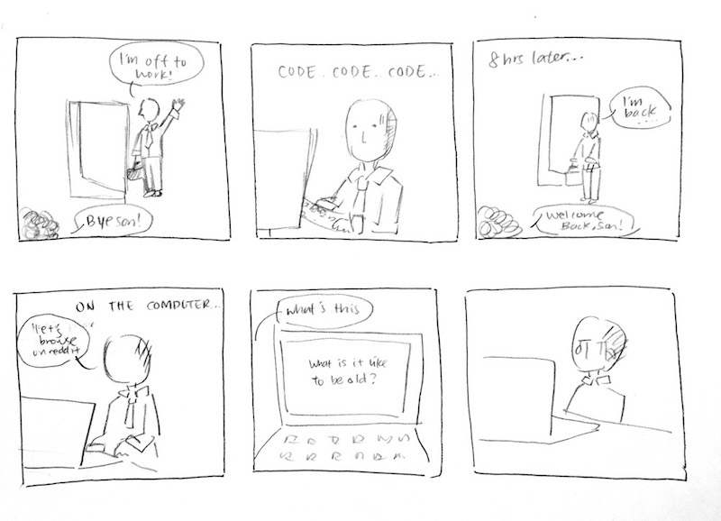
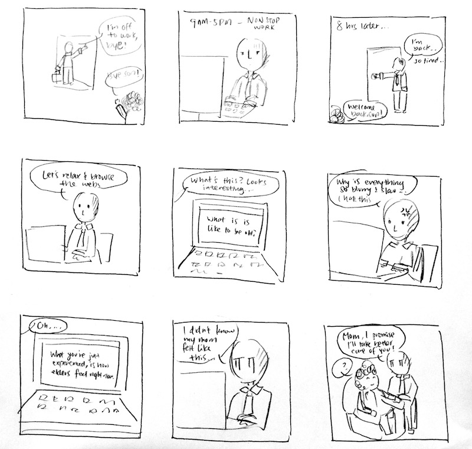

Storyboard: Iteration 1

The first story board describes the daily life of of a working man, and how he comes to discover
a website that allows him to experience what it is like to be an elderly. The man is an office worker,
and leaves for work in the morning with his mom at home. He then proceeds to working all day and returns tired.
With the little free time he has, he spends his time browsing on his computer. He then discovers a website that
asks "What is it like to be old?" and became curious. After going on the website, he is sad as he realizes his
mom is going through what the website showed him. This made him reconsider his relationship with his parents and
want to spent more time with her.
Storyboard: Iteration 2

The second storyboard describes the life of the working man in greater detail. The office worker leaves every
morning to go to work, and greeted off by his mother, who stays at home all day. He proceeds to work non-stop at his
company, and returns home, tired, after 8 hours of work. His mother greets him, but he is too tired to notice. To relax
after his day of work, he browses the web for interesting news. He then stumbles onto a website that asks "What is it like
to be old"? Intrigued by the question, he goes through an interactive experience that allows him to step into the shoes of
the elder. This includes common deterioration of physical abilities, such as blurrier vision and slower movements. It also
shows a sense of loneliness as he finds lack of activities to do. He is frustrated by the experience, as he is used to the
fast-paced work he is required to do everyday. However, at the end of the experience, he realizes that the frustrations are
how his mother feels at home, but without any control. He then sympathizes with his mother and promises to spend more time
with his mother to relieve her loneliness.